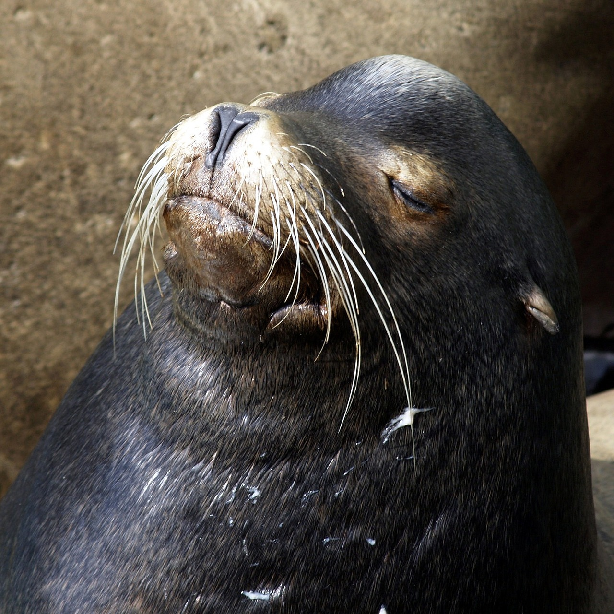

Panda Vermelho
¿Por qué lo usamos? Es un hecho establecido hace demasiado tiempo que un lector se distraerá con el contenido del texto de un sitio mientras que mira su diseño.
Girafa
¿Por qué lo usamos? Es un hecho establecido hace demasiado tiempo que un lector se distraerá con el contenido del texto de un sitio mientras que mira su diseño.
Panda
¿Por qué lo usamos? Es un hecho establecido hace demasiado tiempo que un lector se distraerá con el contenido del texto de un sitio mientras que mira su diseño.
Foca
¿Por qué lo usamos? Es un hecho establecido hace demasiado tiempo que un lector se distraerá con el contenido del texto de un sitio mientras que mira su diseño.
Arara
¿Por qué lo usamos? Es un hecho establecido hace demasiado tiempo que un lector se distraerá con el contenido del texto de un sitio mientras que mira su diseño.
Elefante

¿Por qué lo usamos? Es un hecho establecido hace demasiado tiempo que un lector se distraerá con el contenido del texto de un sitio mientras que mira su diseño.